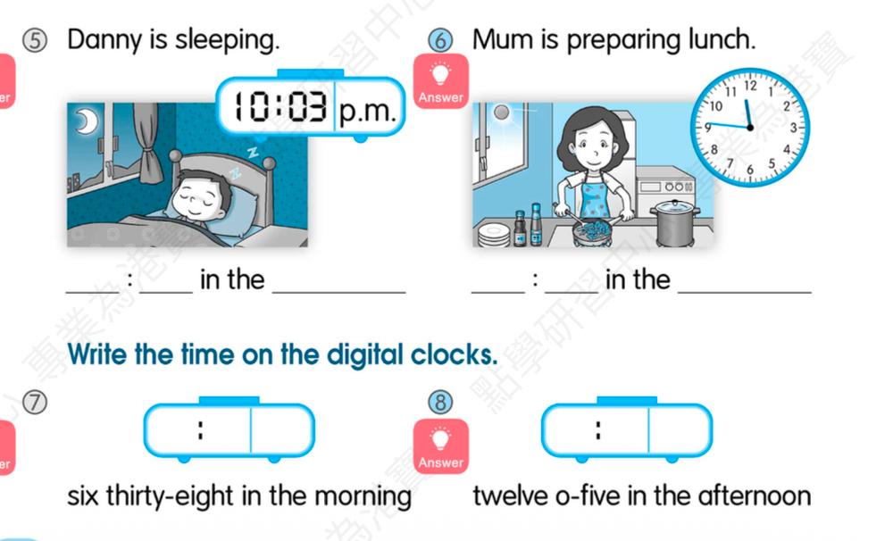

They (make) different sounds to communicate with one another.
Answer: make
Explanation: 三单主语加 s/es；复数主语用原形。
已掌握
| # | 单词/词组 | 中文意思 | 例句/说明 | 已掌握 |
|---|---|---|---|---|
| noun 名词 | ||||
| 1 | picnic | 野餐 | We have a picnic in the park. | |
| 2 | pupil | 小学生 | The pupil reads a book. | |
| verb 动词 | ||||
| 3 | tell story | 讲故事 | I can use tell story in class. | |
| 4 | suggest | 建议 | I suggest we play outside. | |
| 5 | feel | 感觉 | I feel happy today. | |
| phrase 短语 | ||||
| 6 | take photo | 照相 | I take a photo of my cat. | |
| 7 | set the table | 摆餐具 | I set the table before dinner. | |
| noun phrase 名词短语 | ||||
| 8 | MTR station | 地铁站 | The MTR station is near my home. | |
| 9 | school hall | 礼堂 | I can use school hall in class. | |
| adjective 形容词 | ||||
| 10 | hard | 硬的；困难的 | This question is hard. | |
| 11 | busy | 忙碌的 | I can use busy in class. | |
| 12 | pretty | 漂亮的 | The flower is pretty. | |
| conjunction/preposition 连词/介词 | ||||
| 13 | as | 像；正如 | Do as your teacher says. | |
| pronoun 代词 | ||||
| 14 | they | 他们 | They are my friends. | |
| noun/verb 名词/动词 | ||||
| 15 | exercise | 锻炼 | Exercise is good for health. | |
| verb/noun 动词/名词 | ||||
| 16 | change | 改变，找零 | I can change my answer. | |
| uncategorized 未分类 | ||||
| 17 | understand | 理解 | I can use understand in class. | |
| 18 | amazing | 很好的 | I can use amazing in class. | |
| 19 | throw | 扔掉 | I can use throw in class. | |
| 20 | cover | 遮盖 | I can use cover in class. | |
| # | 单词/词组 | 中文意思 | 例句/说明 | 已掌握 |
|---|---|---|---|---|
| adjective 形容词 | ||||
| 1 | delicious | 美味的 | The soup is delicious. | |
| 2 | different | 不同的 | I can use different in class. | |
| noun 名词 | ||||
| 3 | pronoun | 代词 | He is a pronoun. | |
| 4 | character | 角色；人物 | The story has many characters. | |
| 5 | pond | 池塘 | There is a small pond in the park. | |
| 6 | court | 球场 | We play on the court. | |
| 7 | event | 事件 | This event is fun. | |
| 8 | musician | 音乐家 | The musician plays music. | |
| noun phrase 名词短语 | ||||
| 9 | board game | 桌游 | We play a board game after school. | |
| verb 动词 | ||||
| 10 | collect | 收集 | I collect stamps. | |
| 11 | describe | 描述 | I can describe the picture. | |
| preposition 介词 | ||||
| 12 | behind | 在后面 | The cat is behind the box. | |
| phrase 短语 | ||||
| 13 | Hong Kong Island | 香港岛 | I can use Hong Kong Island in class. | |
| 14 | step on | 踩到 | I can use step on in class. | |
| 15 | look after | 照料 | I look after my little sister. | |
| 16 | look at | 看 | I can use look at in class. | |
| adjective/noun 形容词/名词 | ||||
| 17 | round | 圆形 | The ball is round. | |
| uncategorized 未分类 | ||||
| 18 | paragraph | 段落 | I can use paragraph in class. | |
| 19 | passage | 章节 | I can use passage in class. | |
| 20 | mid-year | 期中 | I can use mid-year in class. | |
| 21 | False | 错误的 | I can use False in class. | |
| 22 | phrases | 短语 | I can use phrases in class. | |
| 23 | adjectives | 形容词 | I can use adjectives in class. | |
| 24 | improvement | 提升 | I can use improvement in class. | |
| 25 | shout | 喊 | I can use shout in class. | |
| 26 | thief | 小偷 | I can use thief in class. | |
| 27 | cartoon | 卡通 | I can use cartoon in class. | |
| 28 | royal | 皇家的 | I can use royal in class. | |
| 29 | plain | 普通的 | I can use plain in class. | |
| 30 | flight | 航班 | I can use flight in class. | |
| # | 单词/词组 | 中文意思 | 例句/说明 | 已掌握 |
|---|---|---|---|---|
| time/date 时间日期 | ||||
| 1 | November | 十一月 | November is the eleventh month. | |
| 2 | December | 十二月 | December is the twelfth month. | |
| 3 | Thursday | 星期四 | Thursday is a weekday. | |
| 4 | Saturday | 星期六 | Saturday is a weekend day. | |
| time unit 时间单位 | ||||
| 5 | day | 日 | A day has 24 hours. | |
| 6 | minute | 分 | A minute has 60 seconds. | |
| numbers 数字 | ||||
| 7 | twelve | 12 | Twelve is 12. | |
| 8 | thirty | 30 | Thirty is 30. | |
| 9 | eighty | 80 | Eighty is 80. | |
| 10 | ninety | 90 | Ninety is 90. | |
| ordinal numbers 序数 | ||||
| 11 | third | 第三 | This is the third shape. | |
| solid shape 立体图形 | ||||
| 12 | triangular prism | 三棱柱 | A triangular prism has triangular faces. | |
| 13 | hexagonal prism | 六棱柱 | A hexagonal prism has hexagonal faces. | |
| 14 | hexagonal pyramid | 六棱锥 | A hexagonal pyramid has hexagonal faces. | |
| 15 | cylinder | 圆柱 | A cylinder has two circular faces. | |
| # | 单词/词组 | 中文意思 | 例句/说明 | 已掌握 |
|---|---|---|---|---|
| operations 运算 | ||||
| 1 | addition | 加法 | Addition means putting numbers together. | |
| 2 | subtraction | 减法 | Subtraction means taking away. | |
| 3 | altogether | 一起 | How many are there altogether? | |
| 4 | be left | 剩下的 | How many apples will be left? | |
| geometry 几何 | ||||
| 5 | grid | 网格 | A grid helps us find positions. | |
| 6 | parallel | 平行 | Parallel lines never meet. | |
| 7 | adjecent side | 邻边 | I can read adjecent side in a math question. | |
| question word 题目词 | ||||
| 8 | calculate | 计算 | Calculate the answer. | |
| 9 | estimate | 估计 | Estimate the answer first. | |
| 10 | onwards | 向前；继续向前 | Count onwards from 20. | |
| 11 | backwards | 向后；倒着 | Count backwards from 20. | |
| 12 | match | 匹配 | Match the number to the word. | |
| 13 | respectively | 分别地 | Tom and Ben have 2 and 3 books respectively. | |
| shape 形状 | ||||
| 14 | circle | 圈；圆 | Draw a circle around the answer. | |
| answer 答案 | ||||
| 15 | answer | 答案 | Write the answer in the box. | |
| comparison 比较 | ||||
| 16 | fewer | 更少 | There are fewer apples in this box. | |
| time/date 时间日期 | ||||
| 17 | leap year | 闰年 | A leap year has 366 days. | |
| 18 | common year | 平年 | I can read common year in a math question. | |
| position 位置 | ||||
| 19 | behind | 后面 | The bag is behind the chair. | |
| 20 | below | 下面 | The box is below the table. | |
| 21 | front | 前面 | The door is at the front of the room. | |
| operations calculation 运算 | ||||
| 22 | equally | 平等地 | Share the apples equally. | |
| measurement 测量 | ||||
| 23 | measure | 测量 | We measure the length with a ruler. | |
| geometry tool 几何工具 | ||||
| 24 | set square | 三角尺 | A set square helps us draw angles. | |
| 25 | geo-strip | 几何条 | A geo-strip can help make shapes. | |
| 句型结构 | ||||
| 26 | Angle ... is larger than Angle ... | 角......大于角...... | Angle A is larger than Angle B. | |
| 27 | Angle ... is the largest. | 角......是最大的。 | Angle A is the largest. | |
| 28 | Angle ... is the smallest. | 角......是最小的。 | Angle B is the smallest. | |
| 29 | The lines are perpendicular to each other. | 这些线彼此垂直。 | The lines are perpendicular to each other. | |
| 30 | ... is to the west of ... | ......位于......的西侧。 | The bank is to the west of the school. | |


